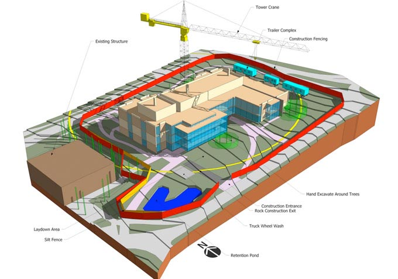

Site Utilization Planning

A process in which BIM is used to graphically represent both permanent and temporary facilities on site during multiple phases of the construction process. It may also be linked with the construction activity schedule to convey space and sequencing requirements.
Additional information incorporated into the model can include labor resources, materials with associated deliveries, and equipment location. Because the 3D model components can be directly linked to the schedule, site management functions such as visualized planning, short-term re-planning, and resource analysis can be analyzed over different spatial and temporal data.
Potential Value
- Efficiently generate site usage layout for temporary facilities, assembly areas, and material deliveries for all phases of construction
- Quickly identify potential and critical space and time conflicts
- Accurately evaluate site layout for safety concerns
- Select a feasible construction scheme
- Effectively communicate construction sequence and layout to all interested parties
- Easily update site organization and space usage as construction progresses
- Minimize the amount of time spent performing site utilization planning
Resources Required
- Design authoring software
- Scheduling software
- 4D model integration software
- Detailed existing conditions site plan
Team Competencies Required
- Ability to create, manipulate, navigate, and review a 3D Model
- Ability to manipulate and assess construction schedule with a 3D model
- Ability to understand typical construction methods
- Ability to translate field knowledge to a technological process